<title>Light and glass rules</title>
<meta name="claude:viewport-fit-sides" content="cover">
<style>
/* Layout: one reading column; rules as a numbered list, pictures in two-up grids beside the rule they show, numbers in one small table. */
:root { --bg: #fcf9f8; --fg: #2a1418; --soft: #6e5459; --line: #e7e4e3; --card: #ffffff; --accent: #cb1b2c; --tint: #fbeeee; --font: "Atkinson Hyperlegible Next", "Atkinson Hyperlegible", system-ui, sans-serif; --mono: ui-monospace, "SF Mono", Menlo, monospace; }
@media (prefers-color-scheme: dark) { :root:not([data-theme="light"]) { --bg: #171413; --fg: #fcf9f8; --soft: #c9b6ba; --line: #3c3736; --card: #221e1d; --accent: #ff5c6b; --tint: #2d2022; color-scheme: dark } }
:root[data-theme="dark"] { --bg: #171413; --fg: #fcf9f8; --soft: #c9b6ba; --line: #3c3736; --card: #221e1d; --accent: #ff5c6b; --tint: #2d2022; color-scheme: dark }
body { margin: 0; background: var(--bg); color: var(--fg); font-family: var(--font); font-size: 16px; line-height: 1.5; padding-block: 32px 64px; padding-left: max(16px, env(safe-area-inset-left, 0px)); padding-right: max(16px, env(safe-area-inset-right, 0px)); }
main { max-width: 1080px; margin-inline: auto; display: grid; gap: 40px; }
h1 { font-size: 1.85rem; margin: 0 0 8px; text-wrap: balance; } h2 { font-size: 1.3rem; margin: 0 0 12px; text-wrap: balance; } h3 { font-size: 1rem; margin: 0 0 6px; }
p { margin: 0; max-width: 68ch; } .soft { color: var(--soft); }
.draft { display: inline-block; font-size: 0.75rem; letter-spacing: 0.06em; text-transform: uppercase; color: var(--accent); border: 1px solid currentColor; border-radius: 999px; padding: 2px 10px; margin-bottom: 12px; }
.ask { background: var(--tint); border-radius: 12px; padding: 16px 20px; display: grid; gap: 8px; } .ask ul, .plain ul { margin: 0; padding-left: 20px; } .plain li { margin-bottom: 4px; }
ol.rules { margin: 0; padding: 0; list-style: none; display: grid; gap: 20px; counter-reset: rule; }
ol.rules > li { display: grid; grid-template-columns: 2.25rem 1fr; gap: 12px; counter-increment: rule; }
ol.rules > li::before { content: counter(rule); font-weight: 700; color: var(--accent); font-size: 1.25rem; line-height: 1.2; }
ol.rules > li > div { display: grid; gap: 8px; min-width: 0; } .why { color: var(--soft); font-size: 0.9375rem; }
.new { font-size: 0.75rem; letter-spacing: 0.06em; text-transform: uppercase; color: var(--accent); }
.grid { display: grid; grid-template-columns: repeat(auto-fit, minmax(min(100%, 440px), 1fr)); gap: 12px; } .grid3 { display: grid; grid-template-columns: repeat(auto-fit, minmax(min(100%, 300px), 1fr)); gap: 12px; }
figure { margin: 0; background: var(--card); border: 1px solid var(--line); border-radius: 12px; padding: 10px; min-width: 0; } figure.pick { border-color: var(--accent); }
figcaption { font-size: 0.8125rem; color: var(--soft); margin-bottom: 6px; } img { display: block; width: 100%; height: auto; border-radius: 6px; }
/* The day-light mock: a plain Spotlight light page with a card near the light, the light drawn in CSS. */
.mock { position: relative; aspect-ratio: 16 / 10; max-width: 100%; border-radius: 6px; background: #fcf9f8; overflow: hidden; --lx: 76%; --ly: 62%; }
.mock .glow { position: absolute; inset: 0; background: radial-gradient(circle at var(--lx) var(--ly), var(--glow-core) 0, var(--glow-mid) 14%, var(--glow-far) 34%, transparent 60%); }
.mock .ball { position: absolute; left: var(--lx); top: var(--ly); width: 18px; height: 18px; margin: -9px; border-radius: 50%; background: radial-gradient(circle at 40% 35%, #fff 0, var(--ball) 60%, rgba(255,255,255,0.4) 100%); box-shadow: 0 0 14px 4px var(--glow-core); }
.mock .card { position: absolute; left: 10%; top: 18%; width: 46%; height: 48%; border-radius: 14px; background: #fff; color: #2a1418; padding: 12px 14px; font-size: 13px; box-sizing: border-box; box-shadow: var(--rim) 0 0 0 1px, -4px 4px 14px -2px var(--cast), inset -3px -3px 6px -2px var(--rimlit); }
.mock .card b { display: block; font-size: 15px; margin-bottom: 4px; }
.mock .btn { position: absolute; left: 10%; top: 74%; padding: 6px 14px; border-radius: 999px; background: #fff; color: #a50c1f; font-size: 13px; font-weight: 600; box-shadow: var(--rim) 0 0 0 1px, -3px 3px 10px -2px var(--cast), inset -2px -2px 4px -1px var(--rimlit); }
table { border-collapse: collapse; width: 100%; font-size: 0.9375rem; font-variant-numeric: tabular-nums; } th, td { text-align: left; padding: 8px 10px; border-bottom: 1px solid var(--line); vertical-align: top; } th { font-weight: 600; color: var(--soft); font-size: 0.8125rem; letter-spacing: 0.04em; text-transform: uppercase; } td.n { text-align: right; white-space: nowrap; } .wrap { overflow-x: auto; }
.opts { display: grid; gap: 12px; } .opt { background: var(--card); border: 1px solid var(--line); border-radius: 12px; padding: 14px 16px; display: grid; gap: 6px; } .opt.pick { border-color: var(--accent); } .pickmark { font-size: 0.75rem; letter-spacing: 0.06em; text-transform: uppercase; color: var(--accent); }
code { font-family: var(--mono); font-size: 0.875em; }
</style>
<main>
<header>
  <span class="draft">Decided: D70, Oct 20, 2026</span>
  <h1>Light and glass rules</h1>
  <p class="soft">One page that says when a component is see-through, when it is Solid with a glass edge, where the light comes from and how bright it is. Sharon approved it on Oct 20, 2026, after two rounds of notes. It is decision D70 and the wiki page Light and glass in lantern-design-system, and this page is saved there under docs/references as the record of the review. Nothing is built yet beyond what main already does.</p>
</header>

<section class="ask">
  <h2>Your turn</h2>
  <ul>
    <li><b>Look at</b> the three close-ups of the edge on a plain light page, under rule 1. You picked A; it goes into #163.</li>
    <li><b>Decide</b> whether rules 2, 4, 6, 7 and 8 now say what you meant. Rule 8 has a new mock where the light shows. Rule 6 carries a draft name, Follow, for the third state of the light setting; swap it if you have a better word.</li>
    <li><b>Then</b> say yes, and the rules go to the wiki as one page and a new decision, D70, replacing the "only on art" part of D64. The speed fix you agreed to becomes its own pull request.</li>
  </ul>
</section>

<section class="plain">
  <h2>What your notes changed</h2>
  <ul>
    <li>"Part" is "component" everywhere.</li>
    <li>Glass bends what is behind it everywhere, on a photo or a plain page too. You switch to Solid yourself when you want it. That is rule 2, and it replaces the "only on art" part of D64.</li>
    <li>Every component with a surface can be Glass. The earlier limit came from an old remark, taken out of context, and is gone. That is rule 4.</li>
    <li>One light, brighter at night and softer by day, in every theme. It stays still unless a person turns on the cursor as the light. That is rule 6.</li>
    <li>The light has a visible source in each product: Spotlight's wheel, Sunrise's Let's chat, Fireside's logo. The Orb is that light when it moves, and the setting is Off, On or Follow. Rules 6 and 7, plus a new section on keeping component rules apart from product rules.</li>
    <li>The light takes its color from what it falls on, like a reflector, never a white picture on top. Rule 8, with a mock you can see this time.</li>
    <li>Settings that turn glass Solid must still look good. Rule 5 says the Solid look is designed, not a fallback, and names the review that checks it.</li>
    <li>The edge on a plain light page: you called it an ugly, uneven grey border. Three close-ups and a pick, under rule 1.</li>
    <li>The speed fix: you agreed with the first one. It is marked as agreed at the bottom.</li>
  </ul>
</section>

<section>
  <h2>The rules</h2>
  <ol class="rules">
    <li><div><h3>One light per page, and every component with a surface answers it.</h3><p>Each component with a surface wears the glass edge by default (D69). Its rim is brightest where it faces the light, with a glint where the light leaves, and its shadow falls away from the light. The same tokens do this in light and dark mode, so a component never has to know which mode it is in.</p>
      <p class="why">Text, Link, Separator, Tabs and icons have no surface and stay as they are.</p>
      <h3 style="margin-top:8px">The edge on a plain light page <span class="new">Picked: A</span></h3>
      <p>You saw an uneven grey border. That is the rim's base line, a 3 to 1 grey under the lit rim, added so the edge never fades out (D64). Here it is close up on Spotlight's secondary buttons, light mode, in three versions.</p>
      <div class="grid3">
        <figure><figcaption>Today: the lit rim over a grey base line</figcaption></figure>
        <figure class="pick"><figcaption>A, your pick: no base line, only the light and the shadow</figcaption>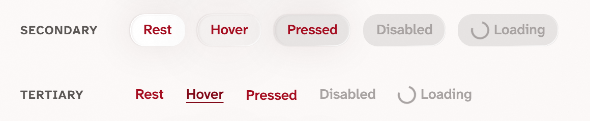</figure>
        <figure><figcaption>B: a faint line of the theme's ink, 14%</figcaption></figure>
      </div>
      <div class="grid3">
        <figure><figcaption>Today: Spotlight cards</figcaption>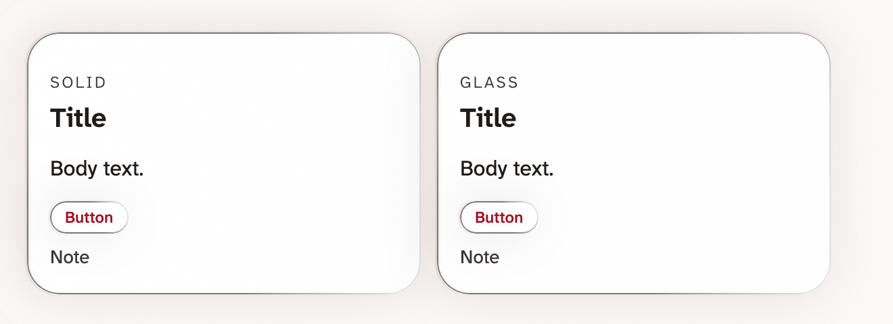</figure>
        <figure class="pick"><figcaption>A: Spotlight cards</figcaption>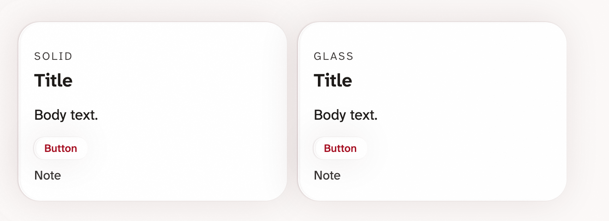</figure>
        <figure><figcaption>B: Spotlight cards</figcaption>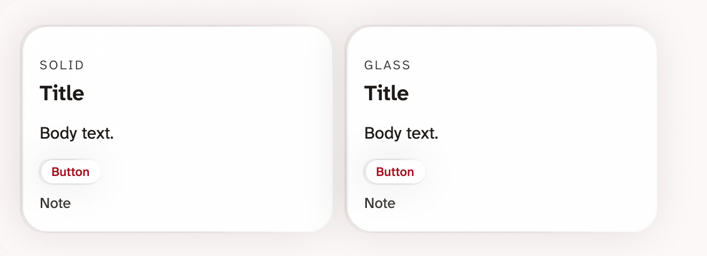</figure>
      </div>
      <div class="grid3">
        <figure><figcaption>Today: Sunrise's Select</figcaption></figure>
        <figure class="pick"><figcaption>A: Sunrise's Select</figcaption>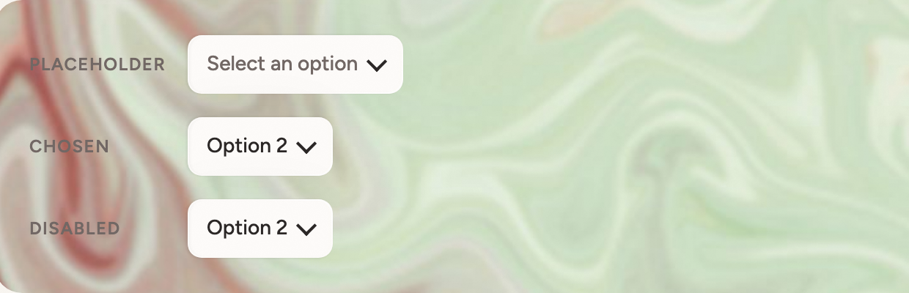</figure>
        <figure><figcaption>B: Sunrise's Select</figcaption>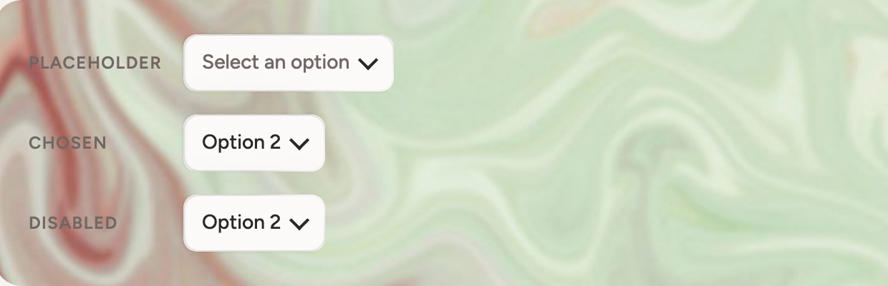</figure>
      </div>
      <p class="why">You picked A on Oct 20. Buttons, cards, tiles, action tiles and tags lose the base line: the shadow and the lit rim are their edge. WCAG asks for a 3 to 1 boundary only where the boundary is what tells you a thing is a control, and a labelled button does not need one. A field or a box does, so Select, the Checkbox box, the Switch track and the Toggle button group keep a 3 to 1 line under their lit rim. The test checks exactly those four.</p>
    </div></li>
    <li><div><h3>Glass bends what is behind it, wherever it is. <span class="new">Changed</span></h3><p>A Glass component is see-through on art, on a photo and on a plain page alike. A Solid component keeps its fill and wears the edge. Which one a component uses is your choice for each use, never the system's guess.</p><p class="why">Replaces the "only on art" part of D64. Today the lens bends only what its container hands it, and a plain color has nothing to bend, so Glass on a plain page shows as its rim, highlight, shade and shadow over that color. The change is to drop the switch that turns Glass into Solid on a plain page, and to let a container hand the lens a photo the way it hands it art.</p><div class="grid"><figure><figcaption>See-through on art: Spotlight's header tiles, light mode</figcaption>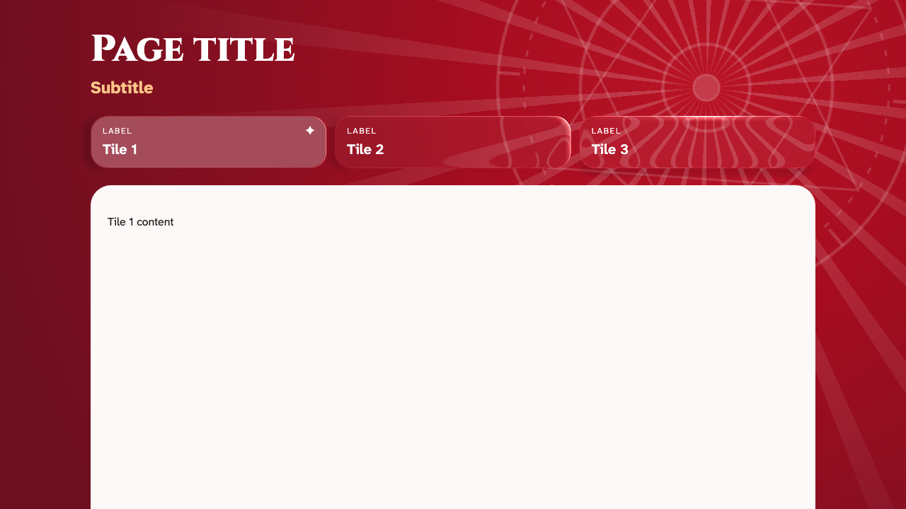</figure><figure><figcaption>Sunrise's header on marble, dark mode</figcaption>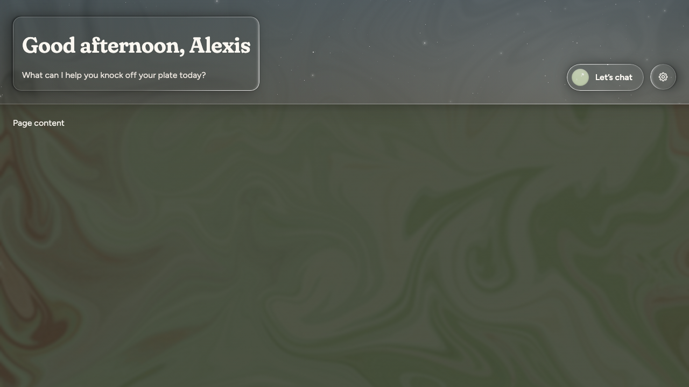</figure></div></div></li>
    <li><div><h3>Words never bend.</h3><p>Text and icons sit on top of the glass and stay sharp. Glass text passes 4.5 to 1 against the lightest and darkest colors behind it, art or page. Tests check it for every theme and mode.</p></div></li>
    <li><div><h3>Every component with a surface can be Glass or Solid. <span class="new">Changed</span></h3><p>Button, Card, Tile, Action tile, Popover, Select, Checkbox, Switch, Tag and Toggle button group all offer both. Solid is the default. You pick Glass where you want it, and the text check in rule 3 keeps values readable there.</p><p class="why">Today only Button, Card, Tile and Action tile can turn Glass. The other five get the switch.</p></div></li>
    <li><div><h3>Settings win over looks, and the Solid look is designed, not a fallback. <span class="new">Changed</span></h3><p>Reduce transparency or Increase contrast, from the device or from Settings, turns every Glass component Solid with the edge. It is still lit by the page's light, with the same rim and shade, so it reads as the same family. Forced colors keep only the border. Reduce motion keeps the light still.</p><p class="why">Issue #8 is the review of every component in Increase contrast, all six looks, with pictures. Anything that looks wrong there gets fixed before this rule is called done.</p></div></li>
    <li><div><h3>One light, brighter at night and softer by day, with one setting: Off, On or Follow. <span class="new">Changed</span></h3><p>Every theme has one light. In dark mode it is bright, as it is today. In light mode it is soft. It rests at the light tokens, <code>light-from-right</code> and <code>light-top</code>; Sunrise's follows the time of day. In Settings the light has three states, in light or dark mode. Off: no light, every surface at rest. On, the default: the product's source is lit and stays where it is. Follow: the light goes where the person points, riding the cursor, and the source dims while it is away.</p><p class="why">D58 had a cursor light in dark mode only; your note makes it one setting with three states, in either mode. "Follow" is a draft name for the third state, since it says what happens without naming the cursor, which also fits touch. Other words that fit: Carried, Held, In hand. Swap it if one reads better.</p></div></li>
    <li><div><h3>Each product has a visible source for its light. The Orb is the light wherever a person moves it. <span class="new">Changed</span></h3><p>At rest the light is the product's own source: the centre of Spotlight's wheel, Sunrise's Let's chat orb, and Fireside's logo, which glows with the warmer Fireside light and draws no orb. The source is dim by day and bright at night, and Off, On or Follow turns it off, leaves it where it is, or lets it move (rule 6). The Orb is that same light the moment a person moves it: dragged in Storybook's glass stories, playgrounds and Try it out windows, and following the pointer on any product page when the setting is Follow. Then every surface answers the moving light instead of the resting source.</p><div class="grid"><figure><figcaption>The Orb, where a person can move the light: Sunrise glass buttons on marble</figcaption>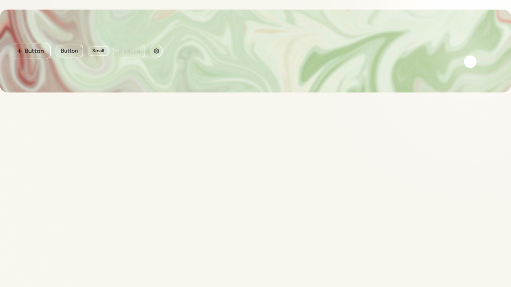</figure><figure><figcaption>A product's own source: Fireside's page shell, dark mode, lit from the header</figcaption>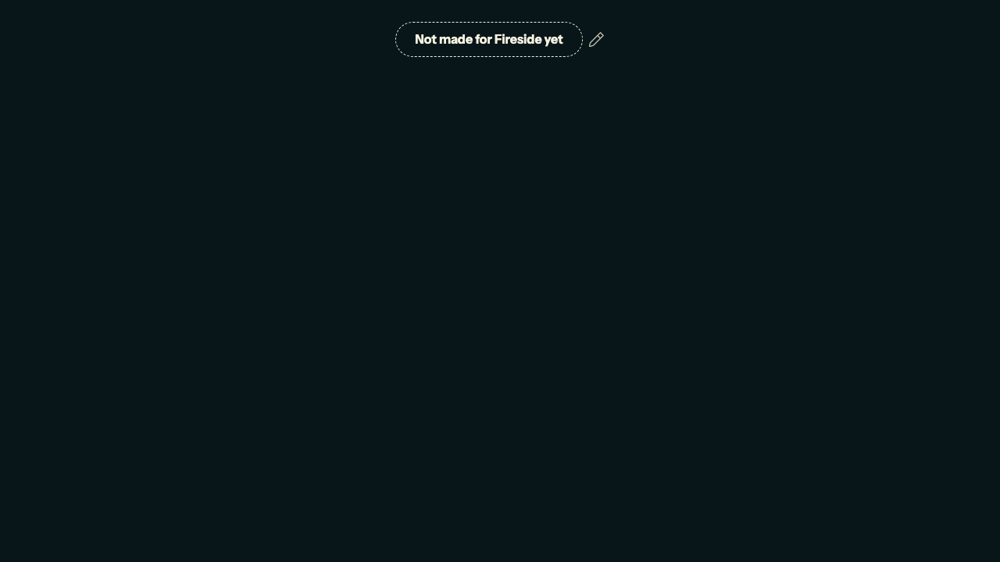</figure></div></div></li>
    <li><div><h3>The light takes its color from what it falls on. <span class="new">Changed</span></h3><p>A real lamp on a white wall shows as the wall's own color made brighter, with a little of the lamp's tint. So the light here is never a white picture laid on top. On art it brightens the pattern it falls on (D59 does this already). On a plain page it takes only the page's own tint and shows through strength and falloff: the rims it hits go brighter, the shadows it casts fall away from it, and nothing turns the theme's color. That is what makes it show on a white Spotlight page instead of vanishing.</p><p class="why">Why the earlier mock showed nothing: white light on a white page has nothing to brighten, so the proposal looked like no proposal. The mock below is a plain Spotlight light page with a card and a button near the light, drawn in CSS, not the renderer. It shows the color and the strength, not the finish.</p>
      <div class="grid">
        <figure style="--glow-core: rgba(255,255,255,0.95); --glow-mid: rgba(255,255,255,0.6); --glow-far: rgba(255,255,255,0.2); --ball: #fff; --rim: rgba(126,121,120,0.6); --rimlit: rgba(255,255,255,0.9); --cast: rgba(60,0,15,0.12)"><figcaption>Today: white light on a white page, nothing to see, and a grey rim</figcaption><div class="mock"><div class="glow"></div><div class="card"><b>Title</b>Body text.</div><div class="btn">Button</div><span class="ball"></span></div></figure>
        <figure class="pick" style="--glow-core: rgba(255,255,255,0.98); --glow-mid: rgba(255,250,248,0.55); --glow-far: rgba(255,244,241,0.18); --ball: #ffffff; --rim: rgba(254,224,221,0.0); --rimlit: rgba(255,255,255,0.95); --cast: rgba(58,47,44,0.14)"><figcaption>Proposed: near-white light that falls off fast; the card's rim facing it goes a brighter off-white and its shadow a neutral grey-brown, the page's own tones and nothing from the theme</figcaption><div class="mock"><div class="glow"></div><div class="card"><b>Title</b>Body text.</div><div class="btn">Button</div><span class="ball"></span></div></figure>
      </div>
      <h3 style="margin-top:8px">The real Orb on a plain light page, today</h3>
<p>Spotlight's Card story from the #163 build, Solid cards with the edge, the real Orb moved to two places. The shadow swings with it and the rim brightens on the side facing it, which is the border responding. The Orb itself all but vanishes on the light page, which is what rule 8 fixes. To drag it yourself: <a href="https://deploy-preview-163--lanterndesignsystem.netlify.app/?path=/story/components-card--solid-and-glass&globals=theme:after-graduation;mode:light">the story in the #163 preview</a>, with the Orb at the right of the section.</p>
<div class="grid"><figure><figcaption>Orb at the top left: the shadows fall down and to the right</figcaption>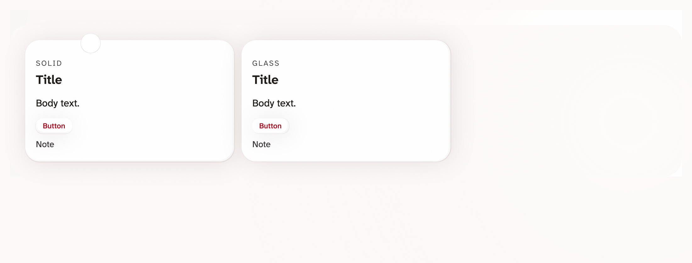</figure><figure><figcaption>Orb at the lower right: the shadows fall down and to the left</figcaption>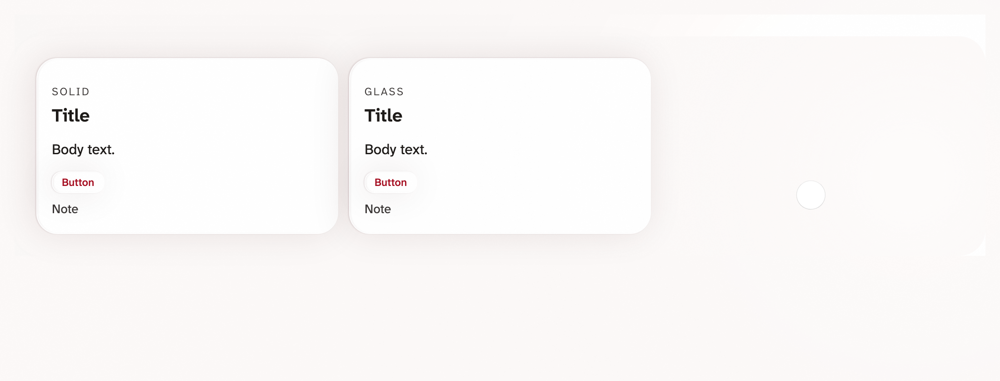</figure></div>
<p class="why">The numbers behind the mock: the light is white and falls off quickly; its peak is half of the night's. Everything it touches takes only its own color made brighter: the rim facing it is the card's white at full strength, the cast shadow is the page's ink at about a seventh. No theme color anywhere, since a white lamp on an off-white wall makes the wall brighter, not pink. They are a starting point for the renderer, not the final values. Two earlier versions put the theme's red in the glow and then in the rim, and both read as a tinted light.</p>
    </div></li>
    <li><div><h3>Every component near the light reacts the same way, whatever the source.</h3><p>Whether the light is the product's resting source, the time of day, the cursor or a dragged Orb, every surface near it lights the same way from the same tokens, by day and at night.</p></div></li>
  </ol>
</section>

<section class="plain">
  <h2>Component rules and product rules, kept apart</h2>
  <p>You asked how to keep the component's rules (the Swiss Army knife that can do anything) apart from a product's rules (what Life Hub, After Graduation or the toolkit actually chooses). Two levels, each with its own home:</p>
  <ul>
    <li><b>Component rules</b> say what a component can do: every look, every state, every option, with plain labels. They live on the Components pages in Storybook and on this wiki page. Rules 1 to 5 and 9 are component rules.</li>
    <li><b>Product rules</b> say what one product chooses: where its light is and what it looks like, which components are Glass on which pages, its art, how bright its light is by day and at night. They live on the Themes wiki page, one section per product, and in Storybook under a Products section with one page per product (Spotlight, Sunrise, Fireside) showing its real pages. Rules 6 to 8 set the shared shape; each product fills in its own values.</li>
    <li><b>The direction:</b> the products drive the changes. When Life Hub, After Graduation or the toolkit needs something a component cannot do, that need becomes the component's new option, built so all three products can use it, and the product then picks it up. A product page never adds an option on its own, so no solution stays locked to one project.</li>
  </ul>
  <p class="soft">Today Storybook has Components, Foundations and Explorations. The Products section is new, and the product-only stories now under Explorations (Sunrise's page shell, the sky header) would move there.</p>
</section>

<section>
  <h2>Why glass pages open slowly, and the fix</h2>
  <p>Measured on this Mac in Chromium on the built Storybook, light mode, with the browser's own profiler. The slow part is not the see-through glass. It is the light: the renderer that lights the background (D59) and the drawing of each orb (D57) run on the page's main thread as soon as the page opens, in one freeze of about two seconds, before anything can be clicked.</p>
  <div class="wrap"><table>
    <thead><tr><th>Story</th><th class="n">Ready after</th><th class="n">Longest freeze</th><th>Where the time goes</th></tr></thead>
    <tbody>
      <tr><td>Sunrise page shell</td><td class="n">2.7 s</td><td class="n">2.0 s</td><td>1.0 s making the renderer's drawing surface, 0.8 s drawing the orb</td></tr>
      <tr><td>Sunrise glass cards, all areas</td><td class="n">2.8 s</td><td class="n">1.8 s</td><td>1.0 s the drawing surface, 0.5 s the orb, 0.2 s the lit background</td></tr>
      <tr><td>Button, glass on every marble</td><td class="n">3.1 s</td><td class="n">1.7 s</td><td>1.0 s the drawing surface, 0.5 s the orb</td></tr>
      <tr><td>Spotlight page shell, see-through tiles, no renderer light</td><td class="n">0.8 s</td><td class="n">0.16 s</td><td>0.09 s painting the glass</td></tr>
    </tbody>
  </table></div>
  <p class="soft" style="margin-top:12px">The first row is the page people open most. The last row is see-through glass on its own, which costs about a tenth of a second. Once the page is open, every story still draws at 60 frames a second, light moving or not (#163's numbers).</p>
  <h3 style="margin-top:20px">The fix</h3>
  <div class="opts">
    <div class="opt pick"><span class="pickmark">Agreed, Oct 20</span><b>Light the page after it shows.</b><p>Show the page with its CSS glow first. Draw the orb and the lit background in the browser's next idle moment and fade them in. The two-second freeze moves off the opening, so the page is usable in under a second. That is an estimate, and the drawing itself still takes the same time, only later. A small change in the orb and lit-surface hooks, coming as its own pull request.</p></div>
    <div class="opt"><b>Later, if needed: make the drawing cheaper.</b><p>Drop the renderer's extra smoothing and its kept drawing buffer. Hand the orb picture over as a bitmap instead of encoding a PNG. Draw the lit background at half resolution, since it is a soft light. The freeze should drop from two seconds to under one, an estimate.</p></div>
    <div class="opt"><b>Later still: draw it in a worker.</b><p>Move the renderer off the main thread with an offscreen canvas, so there is no freeze at all. The largest change, since the orb, the lit background and the cover share one renderer.</p></div>
  </div>
</section>

<section>
  <p class="soft">Sources: D57 to D64 and D69 in Decisions, issues #4, #8 and #49, lantern-code #163, your notes on draft 1 (Oct 20), and this session's profiles of four stories. The pictures are from the #163 build; every picture that shows art is a Storybook story, not a product page.</p>
</section>
</main>
